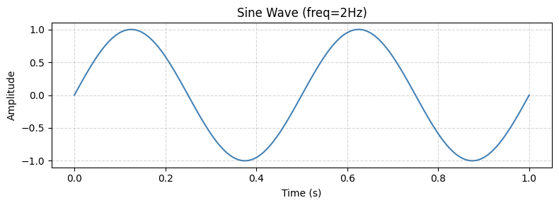
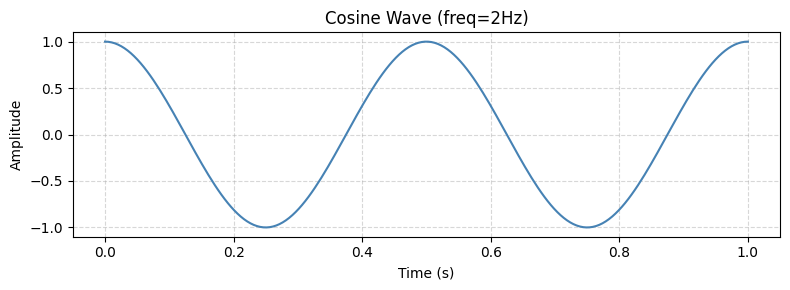
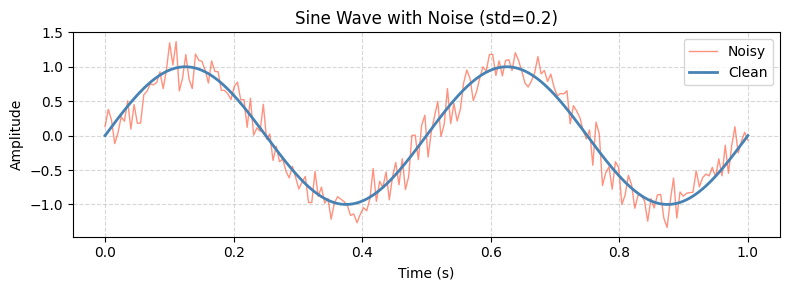
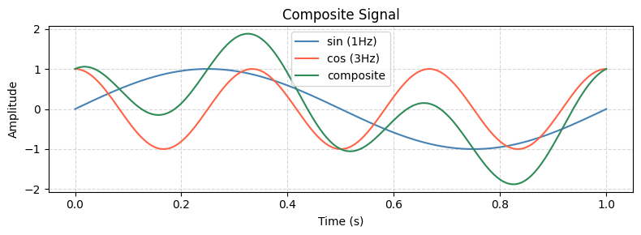

7. [예제] 신호 생성 및 시각화#
src.signals 와 src.plotter 를 import 하여
사인파, 코사인파, 노이즈, 합성파를 생성하고 시각화합니다.
from src.signals import generate_sine, generate_cosine
from src.signals import add_noise, generate_composite
from src.plotter import plot_signal, plot_multiple, plot_with_noise
7.1. 사인파 / 코사인파 생성#
generate_sine() 과 generate_cosine() 으로 기본 신호를 생성합니다.
\[
y_{\sin} = \sin(2\pi f t), \quad y_{\cos} = \cos(2\pi f t)
\]
x, y_sin = generate_sine(freq=2.0, samples=200, duration=1.0)
plot_signal(x, y_sin, title="Sine Wave (freq=2Hz)")

x, y_cos = generate_cosine(freq=2.0, samples=200, duration=1.0)
plot_signal(x, y_cos, title="Cosine Wave (freq=2Hz)")

7.2. 노이즈 추가#
add_noise() 로 가우시안 노이즈를 추가하고 원본과 비교합니다.
y_noisy = add_noise(y_sin, std=0.2)
plot_with_noise(x, y_sin, y_noisy, title="Sine Wave with Noise (std=0.2)")

7.3. 합성파#
generate_composite() 로 사인파와 코사인파를 합성합니다.
\[
y = \sin(2\pi f_1 t) + \cos(2\pi f_2 t)
\]
x, y_comp = generate_composite(freq1=1.0, freq2=3.0, samples=200, duration=1.0)
x, y_sin1 = generate_sine(freq=1.0, samples=200, duration=1.0)
x, y_cos3 = generate_cosine(freq=3.0, samples=200, duration=1.0)
plot_multiple(
x,
signals=[y_sin1, y_cos3, y_comp],
labels=["sin (1Hz)", "cos (3Hz)", "composite"],
title="Composite Signal"
)

7.4. 정리#
함수 |
설명 |
|---|---|
|
사인파 생성 |
|
코사인파 생성 |
|
가우시안 노이즈 추가 |
|
합성파 생성 |
|
단일 신호 플롯 |
|
여러 신호 비교 플롯 |
|
원본 vs 노이즈 비교 플롯 |